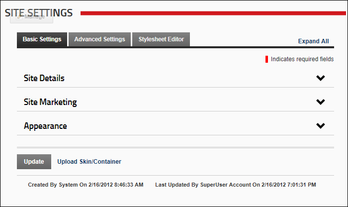

Site Settings as displayed to SuperUsers
The Site Settings page (Admin > Site Settings) enables Administrators to configure basic and advanced site settings including design, advertising, payment, DNN usability, and user registration settings, etc. Where two or more languages are enabled on a site, different site settings can be configured for each language as required.

Site Settings
The Site Settings page includes a number of Advanced Settings ( Site Aliases, SSL Settings, Messaging Settings, Host Settings and Client Resource Management) that are only visible to SuperUsers. These settings can also be accessed and managed under Host > Site Management. These settings are documented under the Site Management section in this manual.
Site Settings as displayed to SuperUsers